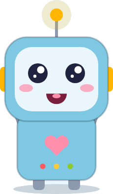
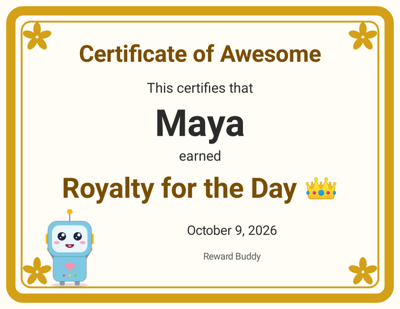
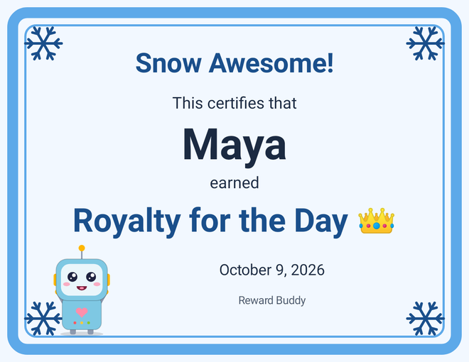
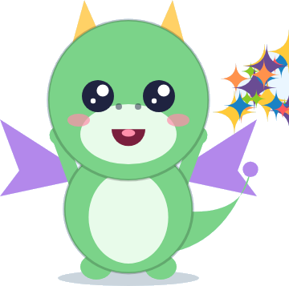
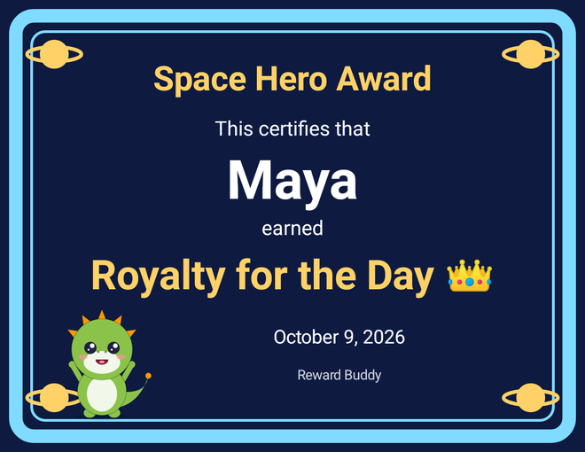
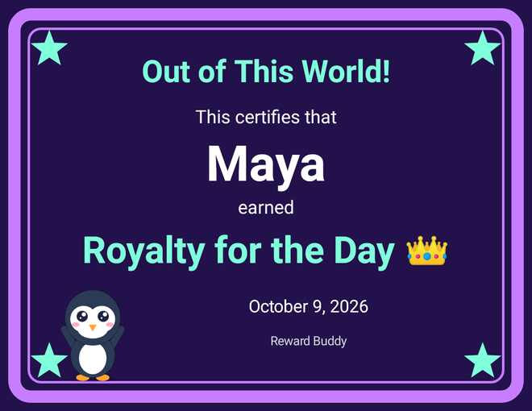
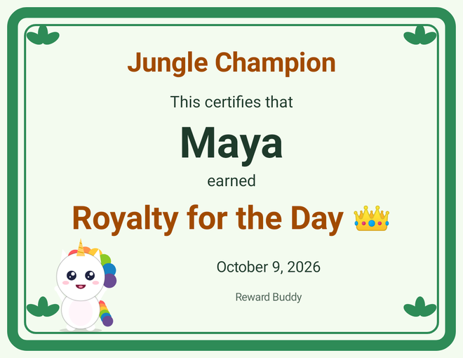
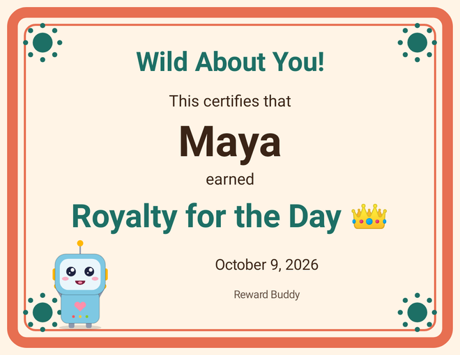
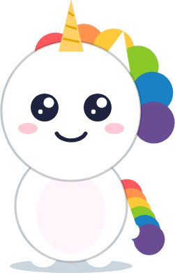
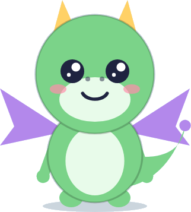

Zyzygy, Inc. · Goldthwaite, Texas
Reward Buddy
The Official Guide
Chores earn robot dance parties. Made for kids 2 to 8 and the grown-ups who love them.

In development for the App Store and Google Play
Designed for the family tablet (iPad and Android tablets). Works on phones too. The characters in this guide are the app's own drawings.
Hello!Beep-boop! Welcome to Reward Buddy.
Reward Buddy is a chore chart that little kids can run themselves. A child taps their own picture, taps the chore they did, and gets a big happy celebration and points. Then they decide how to spend those points: a robot dance party, a joke read out loud, a certificate for their wall, or a grown-up reward like picking what's for dinner.
This guide is for parents, grandparents and caregivers. Boxes marked 📖 Read along together are written for kids to enjoy with a grown-up. Everything about purchases is in clearly marked For grown-ups pages.
What's inside
1 How it works · 2 One tablet, by design · 3 Why it's built this way · 4 Setting up · 5 The kids' side · 6 Rewards · 7 The Wall of Wins · 8 The grown-up area · 9 Settings and kiosk · 10 The holiday surprise · 11 What unlocking adds · 12 Our philosophy and your privacy · 13 Troubleshooting · 14 FAQ · and Say hello
Chapter 1How it works (in four taps)
- Who's playing? Each child taps their own picture on the home screen. Big tiles, no reading needed.
- What did you do? They tap the chore they did, like 🛏️ Make bed or 🪥 Brush teeth. Robo cheers, confetti flies, and "+150 points!" pops up.
- 🎁 Rewards. When they're ready, they open Rewards and choose how to spend their points, or keep saving for something bigger.
- 🖼️ My Wall. Certificates they earn go up on their own Wall of Wins, where they can star their favorites.
What's free
- Unlimited kids, with 24 avatars and 10 colors
- Robo the robot
- 5 built-in chores, which you can rename
- 💃 Dance Party, 😂 Tell me a joke and 🏅 Great Job Certificate
- 🍕 Pick dinner and 👑 Royalty for the day, two grown-up rewards
- 30 jokes, the Classic Gold certificate design, and the Wall of Wins
- Sharing a certificate as a picture, the PIN, alerts and "Lock to app"
- A holiday surprise every December (Chapter 10)
Chapter 2One tablet, by design
Robo:I live on this tablet. I like it here. I never go anywhere else.
Reward Buddy has no accounts, and that's on purpose. Everything it knows about your child stays on the one tablet (or phone) where you set it up. Nothing syncs between devices, and Zyzygy never receives any of it.
We built it this way to protect your child. There's no profile in the cloud, no login to lose, and no company server holding your child's name, chores or points. We couldn't see that information even if we wanted to.
What this means day to day
- Pick one device for chores. Reward Buddy is designed for a child to use one device to record finished chores and pick rewards. Most families use the family tablet in the kitchen or living room.
- Each device is its own separate copy. If you install Reward Buddy on two devices, each one has its own kids, chores, points, rewards and Wall. Points earned on the iPad won't show up on Grandma's tablet, and that's expected.
- Grown-up alerts appear on the same tablet. When a child redeems Pick dinner, the alert shows on that tablet, not on your phone. There's no server to send it anywhere else.
- Family Sharing shares the purchase, not the data. On iPhone and iPad, Family Sharing lets everyone in your family group use Reward Buddy Plus on their own devices. It doesn't share or copy any kids, points or certificates.
- Moving to a new tablet? Purchases come back with Restore purchases. Your kids' points and Walls can come along only through the tablet's own backup (Android's backup in your personal Google account, or iCloud Backup or a computer backup on iPad). Zyzygy never receives or can see those backups. See Chapter 12.
Chapter 3Why it's built this way
Little kids don't get to choose much. In Reward Buddy, they do. Every part of the app is built so a child of 2 to 8 makes the choices, and a grown-up sets the menu.
🙋 Their chores, their tap
Kids record their own chores. They tap their own picture and the chore they did, and the celebration happens right then. Every kid-facing button has a picture and a word, so even kids who don't read yet can find their way.
🐷 Spend now or save up
Rewards come in three sizes: 100, 500 and 1,000 points. Kids see every reward, including the ones they're saving for, with a friendly "Need 150 more." A Dance Party now, or Royalty for the day later? It's their call.
🎁 They pick the reward
You choose which rewards are on the menu. They choose which one to spend their points on, and when.
🎉 Effort gets celebrated
Every chore gets a cheer, confetti and a buddy who's thrilled. Nothing on the kids' side takes points away. Even when the points jar is full, the buddy still cheers and simply suggests it's time to spend.
💛 Rewards that cost nothing
We wanted rewards that don't mean buying more stuff. The built-in rewards are a 10 to 15 second robot dance party, a joke read aloud, and a Great Job certificate, all delivered by the app. The bigger rewards are time together and privileges you already have at home: Pick dinner and Royalty for the day. With Plus, you can add your own, with ideas like "Bake cookies together," "Trip to the park," "Pick the movie," "Breakfast for dinner" or "Pick a game for family game night."
🧺 A full jar means it's time to spend
The points jar holds up to 1,000 points. When it fills up, the app says "You filled your points jar! Time to spend your points!" and the Rewards button starts to pulse. That way points turn into dance parties and family time instead of piling up forever.
These are design choices, not promises about behavior. Every family is different, and you know yours best.
Chapter 4Setting up (about five minutes)
- Once it's released, install Reward Buddy from the App Store (iPad and iPhone) or Google Play (Android tablets and phones). There's no account to create.
- "Welcome to Reward Buddy!" Tap to begin.
- Make a 4-digit grown-up PIN, then type it again. If you pick an easy one like 1234 or 0000, the app warns you ("That PIN is easy to guess. Use it anyway?"). It's your choice.
- "Who's in your family?" Add each child: a first name or nickname (up to 20 letters), one of 24 avatars (🦊 🐱 🐶 🐰 🦖 🚀 🌈 and friends) and a color. Want to look around first? Tap Try it with a demo kid to add "Demo Kid" 🦊 with 250 points. You can delete Demo Kid later.
- "All set! Chores are ready to go." Five chores are already loaded: 🛏️ Make bed (100), 🪥 Brush teeth (150), 🧸 Put away toys (100), 🍽️ Help set table (150) and 👕 Get dressed (200).
Turn on grown-up alerts
When asked, allow notifications. Then when a child redeems a grown-up reward, this tablet shows "Maya redeemed Pick dinner!" so you know to make it happen. You can change this any time in Settings.
Where to put it
Reward Buddy works in landscape or portrait. On a tablet held sideways, the buddy is on the left and the chores are on the right. On phones, everything stacks into one column with big buttons. A kitchen counter at kid height is perfect.
Chapter 5The kids' side
Hi! I'm Robo. I'm your Reward Buddy!
First, find your picture and tap it.
Did you make your bed? Brush your teeth? Tap the chore you did!
Then I cheer: "Beep-boop! You did it!" 🎉 And you get points!
What kids see
- "Who's playing?" One big tile for each child. A small Grown-ups 🔒 button sits in the corner for you.
- Their own screen: their buddy (blinking and bobbing), their name, a points meter from 0 to 1,000 with marks at 100, 500 and 1,000, the chores, and two big buttons: 🎁 Rewards and 🖼️ My Wall.
- "What did you do?" Their chores, each with a picture, a word and its points.
- Celebration: the buddy jumps, confetti flies, and the points show, like "+150 points!"
Your points go in your points jar. It can hold 1,000 points!
When it's full, I say: "Time to spend your points! 🎁"
Spend them on something fun, then fill it up again!
Each child's points, chores history, Wall and jokes are kept separately, so siblings never mix up their points. A chore can be tapped again after a second and a half. There are no daily limits, so if someone gets a little tap-happy, you can fix points in the grown-up area (Chapter 8).
Chapter 6Rewards
Tap 🎁 Rewards to see what you can get.
The bright ones are ready! The dim ones say how many more points you need.
💃 Dance Party: I dance! Badly! On purpose! Dance with me!
😂 Tell me a joke: I tell you a joke out loud.
🏅 Great Job: you get a certificate for your Wall!
| Reward | Points | What happens |
|---|---|---|
| 💃 Dance Party | 100 | A full-screen 10 to 15 second dance to music the app makes itself. The moves include the Wobbly Shuffle, Spin with Flailing Arms, Freeze and Wiggle, the Pretend Trip, and always a Finale Jump. A big ✋ Stop button is always there. Points are spent when the dance starts. |
| 😂 Tell me a joke | 100 | The buddy reads a joke aloud with the tablet's own voice (on Android, only voices installed on the tablet), in big text too. No repeats until every joke has been told. |
| 🏅 Great Job Certificate | 100 | A certificate with the child's name, the reward and the date, saved to their Wall. |
| 🍕 Pick dinner | 500 | "Ask a grown-up for Pick dinner?" ✅ Yes! → a certificate, "A grown-up will make it happen!", and an alert for you. |
| 👑 Royalty for the day | 1,000 | The same, for the biggest reward of all. Grown-ups switch the three instant rewards on or off in Grown-ups › Rewards. |
How jokes work
Knock-knock jokes are interactive. Robo says "Knock knock!" and your child taps Who's there?, then "Lettuce who?", then gets the punchline and taps Ha ha! 😂. For other jokes, the punchline comes after a few seconds, or right away with Tell me! 🤔. If "Speak jokes aloud" is off, or there's no voice installed, jokes show as text in a bouncing speech bubble.
Chapter 7The Wall of Wins
Tap 🖼️ My Wall to see all your certificates!
Tap one to make it big. Tap ⭐ Favorite to keep it at the top.
Your Wall is getting full. Robo says we need a bigger wall! 🖼️🖼️🖼️

- Order: starred favorites first, then newest first.
- Kids can star and unstar. Only a grown-up can delete a certificate (press and hold it in the grown-up area).
- Share as a picture (free): from the grown-up area, send a certificate to Grandma through the tablet's own share menu. It goes only where you send it.
- Print (with Plus): print a letter-size certificate for the fridge with the tablet's own print dialog.
- Certificate design: pick the family's design in Settings › Certificate design. Certificates already on the Wall keep the design they were made with.
The name on a certificate is saved when it's made, so renaming a child doesn't change old certificates.
Chapter 8 · For grown-upsThe grown-up area
Tap Grown-ups 🔒 on the home screen and enter your PIN. Purchases, Restore, settings, your own chores and rewards, requests, deleting a child, sharing and printing all live here, behind the "grown-up gate."
📬 Requests
Grown-up rewards your kids have redeemed, oldest first, each with Mark fulfilled ✅. The Grown-ups button shows how many are waiting (on iPad, so does the app icon). Recent fulfilled requests are listed below.
👧 Kids
Add, edit (name, avatar, color, buddy) or delete a child. Give or take points with an optional reason ("Extra help with the dishes"). Each change is logged under recent points.
🧹 Chores
Rename the 5 built-in chores for free. With Plus, change their points or picture, hide them, or make brand-new chores worth 10 to 1,000 points.
🎁 Rewards
Switch the three instant rewards on or off. Grown-up rewards are listed too, and with Plus you can make your own.
🤖 Buddies, ⭐ Plus & Packs, ⚙️ Settings
Meet the buddies (pick one per child under Kids › Edit), upgrades and Restore purchases (Chapter 11), and settings (Chapter 9).
PIN safety, without the stress
- Wrong PIN five times? "Try again in 30 seconds." More misses double the wait, up to 5 minutes.
- Forgot your PIN? Tap Forgot PIN? ("This only resets the PIN. Kids' points and walls are kept."), hold the button for 3 seconds, then answer a grown-up math question like "What is 7 × 8 + 13?", and set a new PIN. Nothing else is erased.
- Walked away? The grown-up area closes after 5 minutes of no tapping, scrolling or typing, or when you leave the app. Your PIN is saved only in scrambled (hashed) form, never as the number itself.
Chapter 9 · For grown-upsSettings and "Lock to app"
| Setting | What it does |
|---|---|
| Sounds | Dance music and cheers on or off. Volume follows the tablet's volume buttons. |
| Speak jokes aloud | The buddy reads jokes with the tablet's own voice. Off means text only. On Android, only voices installed on the tablet are used. |
| Notifications | "Tell me when a kid redeems a grown-up reward," shown on this tablet. |
| Reduce motion | Follow the device's setting, or force it on or off. On means no confetti, no screen shake, simple fades and a gentle sway instead of the full dance. |
| Certificate design | The look for new certificates. |
| Lock to app | Keeps little fingers inside Reward Buddy (see below). |
| Change PIN, Privacy | Set a new PIN, and read what the app keeps (Chapter 12). |
🔒 Lock to app
iPad and iPhone
Apple doesn't let apps lock themselves, so Reward Buddy shows you how to use the tablet's built-in Guided Access: turn it on in Settings › Accessibility › Guided Access and set a passcode, then triple-click the top (or Home) button while Reward Buddy is open. The app shows "Guided Access is ON ✅" when it's working.
Android
Turning on Lock to app uses Android's screen pinning. Android may ask you to confirm, and some tablets need App pinning turned on in Settings first. To unpin, use the switch in the grown-up area, or hold Back + Overview (or swipe up and hold) and enter your tablet's PIN if you set one. The app re-pins itself when it opens.
These use your tablet's own built-in lock. A determined explorer may still find a way out, so a grown-up nearby is the best lock of all.
♿ Built for little hands and every kid
Kid buttons are big (at least 64 points) and always have a picture and a word. Every button has a VoiceOver or TalkBack label, like "Brush teeth, 150 points." Text grows with the tablet's text size, every joke is shown as text as well as spoken, and every text color meets WCAG AA contrast.
Chapter 10The holiday surprise 🎄
Every year from December 1 to January 6, Reward Buddy brings out free holiday extras: 8 Christmas jokes join the joke mix, and 2 Christmas certificate designs, Snowflake Sparkle and Holly Jolly, appear in the design picker. They pack themselves away on January 7, and come back next December. There's nothing to buy and nothing to turn on.

In December, I learn new jokes! ❄️
Knock knock! Who's there? Elf. Elf who? Elf me, I can't reach the doorbell!
Certificates made with a holiday design keep it on the Wall all year.
Chapter 11 · For grown-upsWhat unlocking adds
Everything so far works in the free version, for as many kids as you have. Want more? Here's what's waiting in the grown-up area, behind your PIN. Kids never see a price or a buy button.

⭐ Reward Buddy Plus · $2.99 one time
- Four more buddies, each with a signature move: Sparkle the Dragon breathes a puff of rainbow glitter ("Woo-hoo! Glitter time!"), Rainbow the Unicorn's mane flows and sparkles ("Hooray! You're magical!"), Stompy the Dinosaur stomps with a cute ROAR ("ROAR! That means awesome!"), and Pip the Penguin waddles, then belly-slides ("Wheee! Great job!").
- Your own chores with your own points, from 10 to 1,000, plus changing points or pictures on built-in chores, or hiding them. There are ideas to start with, like 🐶 Feed the pet, 🌱 Water the plants and 📚 Read a book.
- Your own grown-up rewards at 500 or 1,000 points, with ideas like 🍪 Bake cookies together, 🛝 Trip to the park and ⛺ Sleepover in the living room.
- Print certificates for the fridge, and the Rainbow Stars certificate design. (Ones already on your Wall keep it.)
- Family Sharing is on for Plus on iPhone and iPad, so one purchase covers your Family Sharing group. (It shares the purchase only, never any kids' data.)
🎁 Packs · $1.99 each, no Plus needed
| Pack | What's inside |
|---|---|
| 🐒 Animal Party Jokes | 12 more silly animal jokes ("Who is a penguin's favorite relative? Aunt Arctica!") |
| 🍌 Silly Food Jokes | 12 more giggly food jokes ("What do you call a fake noodle? An impasta!") |
| 🚀 Space Certificates | 2 designs: Rocket Launch and Galaxy Glow |
| 🦁 Safari Certificates | 2 designs: Jungle Leaves and Safari Sunset |
| 🎵 Party Beats | 2 new Dance Party songs, Disco Dino and Bubble Bounce, made inside the app like Robo Bop |




Packs are separate from Plus (Plus doesn't include them) and aren't covered by Family Sharing. All one-time, no subscription. Prices are US prices; your store shows yours. On a new device, tap Restore purchases in Plus & Packs.

Chapter 12 · For grown-upsOur philosophy and your privacy
We make apps the way we'd want them for our own family. You pay once, a little, for what you want. There are no ads, no subscriptions and no accounts, and we don't collect or share any data, about you or your child. Reward Buddy keeps everything on your tablet.
Reward Buddy comes from Zyzygy, Inc., a small company in Goldthwaite, Texas.
What we don't do
- No ads, ever
- No subscriptions
- No accounts or sign-in
- No analytics or tracking
- No data collected or shared
What the app keeps, and where
Each child's first name or nickname, avatar, color and buddy; points, chore history, certificates and requests; your chores, rewards and settings; your PIN (scrambled, never the number itself); and whether you own Plus or packs. All of it stays in the app's own storage on this tablet. Zyzygy has no server and never receives any of it.
The fine print, in plain words
- No camera, microphone, location or contacts. Nothing a child does is sent anywhere. There's no chat, and nothing to sign up for.
- The internet is only for purchases. Buying or restoring goes through Apple or Google under their privacy policies, and we never see payment details. Everything else works offline.
- Jokes are read aloud by the tablet's own voice. On Android, jokes are read aloud only with voices installed on the tablet. If none is installed, the joke shows as text.
- Grown-up alerts are notifications on this same tablet. No push service, no server.
- No links out. The app doesn't send kids to websites. Sharing and printing sit behind your PIN and go only where you send them.
- Backups: App data stays on the device. If your family has Android's own backup turned on, the system may include it in your personal Google account backup so it can be restored to a new device. On iPhone and iPad, your family's own iCloud Backup or computer backup may include it in the same way. Zyzygy never receives or can see those backups.
- Deleting: delete a child in the grown-up area (with their points, history, Wall and requests), or delete the app to remove everything.
- If a save file ever gets damaged, the app keeps the last good copy and restores it. If nothing can be read, it sets the damaged file aside instead of erasing it and asks a grown-up to set things up again.
Chapter 13 · For grown-upsTroubleshooting
I forgot my PIN.
Tap Forgot PIN?, hold the button for 3 seconds, answer the math question, and set a new PIN. Kids' points and Walls are kept.
It says "Try again in 30 seconds."
Too many wrong PINs in a row. Wait it out. The pause gets longer with more misses, up to 5 minutes.
The Dance Party is silent.
Check that Sounds is on in Settings, that the tablet's volume is up, and that it isn't muted.
The buddy doesn't read the joke out loud.
Check Speak jokes aloud in Settings and the tablet's volume. If the tablet has no voice installed, jokes show as text. On Android, jokes are read aloud only with voices installed on the tablet. If none is installed, the joke shows as text. You can add a voice in the tablet's text-to-speech settings.
I didn't get an alert when my child picked dinner.
Alerts appear on the tablet Reward Buddy is on, not on your phone. Check that notifications are on in Reward Buddy's Settings and allowed for the app in the tablet's settings. Requests are always waiting in Grown-ups › Requests either way.
My child tapped "Make bed" ten times.
Ah, an enthusiast. Take the extra points back in Grown-ups › Kids with a reason. It's logged so everyone can see why.
"Wow, your points jar is full!"
The jar holds 1,000 points, and extra points aren't added. Time to spend some!
A buddy, chore editor or Print button has a 🔒.
That's a Plus feature. Tapping it (behind the PIN) shows what Plus includes.
The grown-up area closed by itself.
It closes after 5 minutes of no activity, or when you leave the app, so curious kids can't wander in. Enter the PIN again.
"Reward Buddy couldn't read its latest save, so it restored the last good copy."
Something interrupted a save. Check recent points. If no saved copy could be read, the app keeps the damaged file and asks a grown-up to set up again.
My purchase isn't showing.
Go to Plus & Packs › Restore purchases, signed in to the account you bought with. A purchase waiting for approval (like Ask to Buy) unlocks once it's approved.
I can't get out of the pinned app (Android).
Turn off Lock to app in the grown-up area, or hold Back + Overview (or swipe up and hold).

Chapter 14 · For grown-upsFAQ
Can we use Reward Buddy on two tablets, or on my phone and the kids' tablet?
You can install it on both, but they won't talk to each other. By design, Reward Buddy has no accounts and keeps a child's information only on the device where it's entered. Each device is a separate copy with its own kids, chores, points and rewards. It's meant for a child to use one device to record chores and pick rewards. Family Sharing on iPhone and iPad shares the Plus purchase, not any data. It's a deliberate privacy choice: your child's information stays on that tablet and never comes to us. (Your tablet's own backup can include it, if you have backup turned on. See Chapter 12.)
How many kids can I add?
As many as you like, free.
Does it work on a phone?
Yes. It's designed for the family tablet, and it works on phones too, with the same big buttons in one column.
What ages is it for?
Kids 2 to 8. Pre-readers get pictures and words on every button, and jokes are read aloud.
Can my child buy something by accident?
No. Every purchase, setting and Restore is behind your 4-digit PIN, and the kids' side has no store, prices or links.
Is Plus a subscription? Does it include the packs?
No and no. Plus is a one-time purchase, and packs are separate one-time purchases. You don't need Plus to buy a pack.
Can I take points away?
Yes, in Grown-ups › Kids, with an optional reason that's logged. There's no "lose points" button on the kids' side.
Is there a daily limit on chores?
No. Keep it simple, and adjust points if you need to.
Does it need the internet?
No. Only buying or restoring a purchase does, through Apple or Google. On Android, jokes are read aloud only with voices installed on the tablet. If none is installed, the joke shows as text.
Where does the dance music come from?
Reward Buddy makes it inside the app as it plays. There are no music files and no licensed songs. Robo just has that much rhythm. (Robo has no rhythm.)
For grown-upsSay hello
Questions, ideas, or a story about the best dance party in your house? We'd love to hear it.
support@zyzygy.us
We reply within 2 business days.
Website: zyzygy.us
Reward Buddy is in development for the App Store and Google Play. Prices are set in the stores and shown here as current US prices. © Zyzygy, Inc., Goldthwaite, Texas.